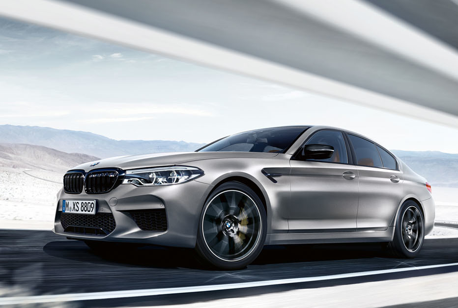
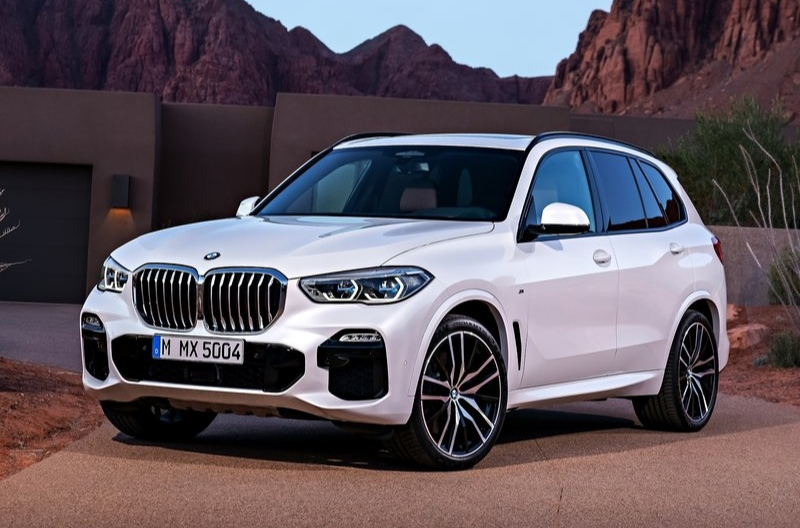
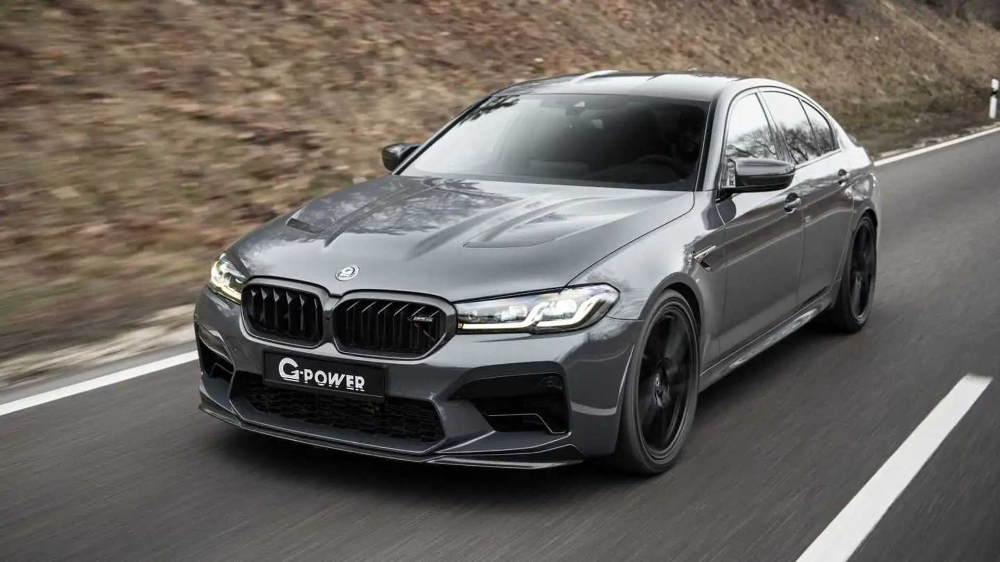
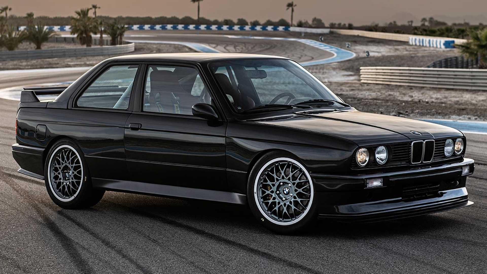
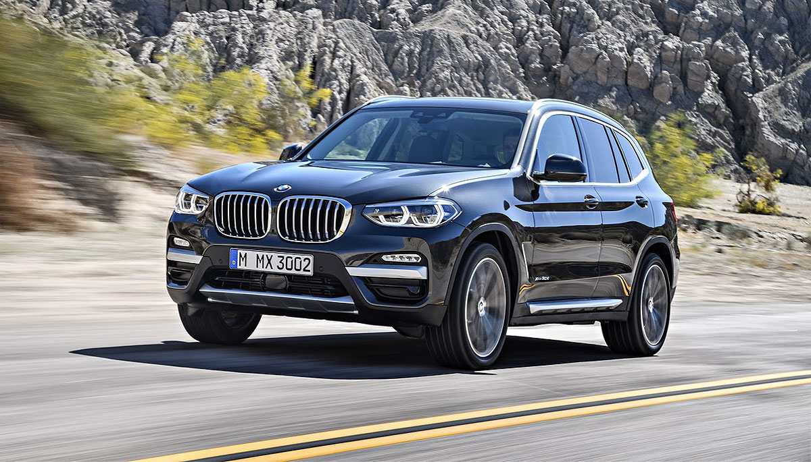

BMW i8 je suprotnost BMW i3 modela. i3 je namijenjen gradu i ima potpuno
električni pogon dok je i8 sportski automobil za uživanje u
sportskoj vožnji van grada. Uz 2 elektromotora i8 će imati i benzinski
motor.
BMW M3

Prvi službeni BMW M3 je predstavljen na Amsterdamskom motor show-u 1984.
godine.Pokretao ga je
modificirani motor iz predhodnog M1 modela (M88/3). Ubrzanje do 100 km/h
iznosi 6,5 sekundi,
a maksimalna brzina 245 km/h.
BMW X5

BMW X5 je luksuzni SUV (Sport Utility Vehicle) koji se u prodaji po prvi
put pojavio 2000. godine,
a baziran je na platformi tadašnje generacije BMW-a serije 5. X5 je
ujedno bio i prvi terenac marke BMW.
BMW M5

Cilindri/ventili 6/4 Obujam 3453 cm³ Promjer/hod 94,3/84 mm Najveća
snaga 210 kW (286ks)/6500 Najveći okretni moment 340 Nm /4500
Mjenjač Getrag 280/5 - 5 brzinski ručni
BMW E36

U oktobru 1990. godine je fokus svetske automobilske industrije bio na
jednom mestu - u gradicu Miramas na jugu Francuske.
Jedan je od najpoznatijih auta 90-ih.
BMW X3

BMW X3 je terenac koji se u prodaji po prvi put pojavio 2003. godine, a
baziran je na platformi tadašnje generacije BMW-a serije 3.
Trenutačno je u drugoj generaciji.